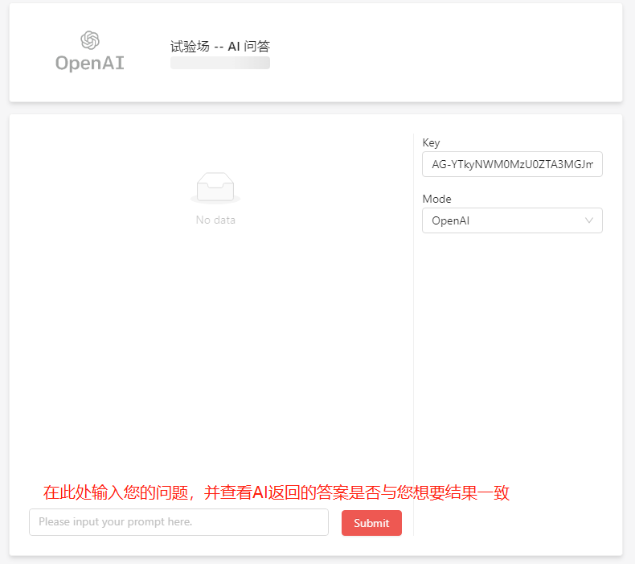
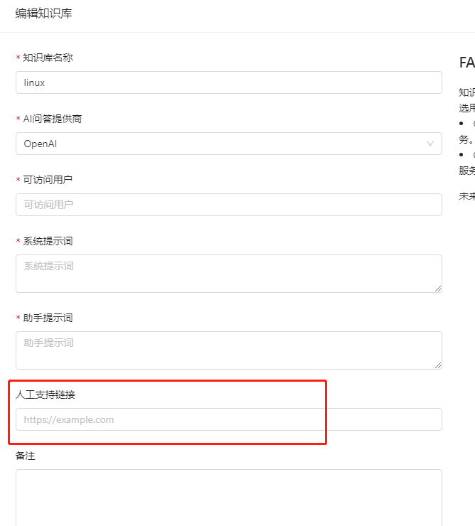

APIGPT.Cloud - AI问答 开发文档
1 AI问答应用
1.1 创建应用
登录企业版管理页面，去到AI问答板块，点击创建AI问答
填写应用数据后提交

即可在应用列表看到已创建的应用

1.2 添加资源、知识
除了在创建应用时需要上传资源文件以供AI问答训练外，已创建的AI问答应用还可以添加资源和知识。
其中资源是以文件的形式导入的，支持的文件格式包括pdf、excel、txt这几种。
知识是通过文本的形式添加，您可以在文本编辑器中输入您的资料。
1.3 使用Playground测试问答
在AI问答中上传资料文件后，APIGPT会将您的资料转换成向量数据并自动训练AI，您可以在playground中询问AI与资料内容相关的问题，并查看相关回答。

1.4 将AI问答嵌入网站
点击客服图标，即可出现一段代码，将它放入您网站上，即可出现问答图标
点击嵌入的图标，输入邮箱，即可使用AI问答

1.5 添加人工支持链接
点击AI问答应用上的edit按键，即可弹出知识库编辑页面，其中输入您的人工支持链接，那么在用户使用您的AI问答应用询问“人工支持”等相关问题时，AI便会将您的人工链接返回给用户。

2 使用API
2.1 认证
AI问答 使用 API 密钥进行身份验证。请访问你的 App 页面，以获取你在请求中使用的 API 密钥。

所有 API 请求都应该在 Authorization HTTP 头中包含你的 API 密钥，如下所示：
Authorization: Bearer <替换成从APIGPT.CLOUD创建的APP Key>
2.2 发送请求
你可以将下面的命令粘贴到终端中以运行你的第一个 API 请求。请确保将
发送你的第一个 API 请求
curl https://aichat.pgpt.cloud/v1/chat/completions \
-H "Content-Type: application/json" \
-H "Authorization: Bearer <API-KEY>" \
-d '{
"messages": [
{
"role": "user",
"content": "深言答意是什么"
}
],
"stream": false,
"model": "gpt-3.5-turbo",
"temperature": 0.5,
"presence_penalty": 0,
"frequency_penalty": 0,
"max_tokens": 1000
}'
import openai
openai.api_key = "<API_KEY>"
openai.api_base = 'https://aichat.pgpt.cloud/v1'
res = openai.ChatCompletion.create(
model="gpt-3.5-turbo",
messages=[
{"role": "system", "content": "You are a helpful assistant."},
{"role": "user", "content": "Hello!"}
]
)
print(res)
如果你会收到类下面JSON格式的数据响应，这说明你的请求成功了
{
"id": "chatcmpl-8p5yYyi9TRZ0bWH5yCFn8jdHl2vcu",
"object": "chat.completion",
"created": 1707188390,
"model": "gpt-35-turbo",
"prompt_filter_results": [
{
"prompt_index": 0,
"content_filter_results": {
"hate": {
"filtered": false,
"severity": "safe"
},
"self_harm": {
"filtered": false,
"severity": "safe"
},
"sexual": {
"filtered": false,
"severity": "safe"
},
"violence": {
"filtered": false,
"severity": "safe"
}
}
}
],
"choices": [
{
"finish_reason": "stop",
"index": 0,
"message": {
"role": "assistant",
"content": "\"深言答意\"是一个成语，意思是说话或回答非常深刻和有见地。它形容一个人的言辞或回答非常有智慧和深度，能够揭示问题的本质或提供有价值的观点。"
},
"content_filter_results": {
"hate": {
"filtered": false,
"severity": "safe"
},
"self_harm": {
"filtered": false,
"severity": "safe"
},
"sexual": {
"filtered": false,
"severity": "safe"
},
"violence": {
"filtered": false,
"severity": "safe"
}
}
}
],
"usage": {
"prompt_tokens": 39,
"completion_tokens": 81,
"total_tokens": 120
}
}
Request Body
参数 - model string Required
要使用的模型ID。目前我们支持并推荐用 gpt-3.5-turbo, gpt-3.5-turbo-16k, gpt-4,gpt-4-32k, gpt-4-turbo, gpt-4-tubo-vision
参数 - messages array Required
到目前为止，对话包含的消息列表
消息 message 的数据结构:
| 参数 | 类型 | 是否必须 | 描述 |
|---|---|---|---|
| role | string |
Required |
消息作者的角色。其中之一是system、user、assistant。 |
| content | string |
Optional |
消息的内容。除了带有函数调用的assistant，所有消息都需要 content。 |
| name | string |
Optional |
此 content 作者的姓名。姓名可以包含a-z、A-Z、0-9和下划线，最长长度为64个字符。 |
参数 - temperature number Optional Defaults to 1
要使用的采样温度，介于0和2之间。较高的值（如0.8）会使输出更加随机，而较低的值（如0.2）会使输出更加集中和确定性。
参数 stream boolean Optional Defaults to false
如果设置了此选项，将发送部分消息增量，就像在 ChatGPT 中一样。令牌将作为数据类型的服务器发送的事件逐步发送，一旦可用，流将以 data: [DONE] 消息终止。
参数 max_tokens integer Optional Defaults to inf
在聊天补全中生成的最大令牌数。 输入令牌和生成令牌的总长度受模型上下文长度的限制。
错误代码
| Error Code | Meaning |
|---|---|
| 400 | Invalid request: there was an issue with the format or content of your request. |
| 401 | Unauthorized: there's an issue with your API key. |
| 403 | Forbidden: your API key does not have permission to use the specified resource. |
| 404 | Not found: the requested resource was not found. |
| 429 | Your account has hit a rate limit. |
| 500 | An unexpected error has occurred internal to Anthropic's systems. |
| 529 | Your API is temporarily overloaded. |
When receiving a streaming response via SSE, it's possible that an error can occur after returning a 200 response, in which case error handling wouldn't follow these standard mechanisms.